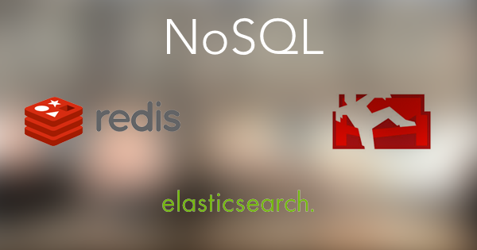

EuTM workshop: Document based databases
Hi at all,
in October we will have our next Tech meetup. We will talk about document based databases.
Tom will talk about his experience with Elasticsearch and Patrick will introduce us to Couch-Database and Redis-caching. Afterwards can discuss and challenge the approach, and then move to the city of Maastricht and have a drink or two.
We are looking forward to seeing you all there.
Cheers